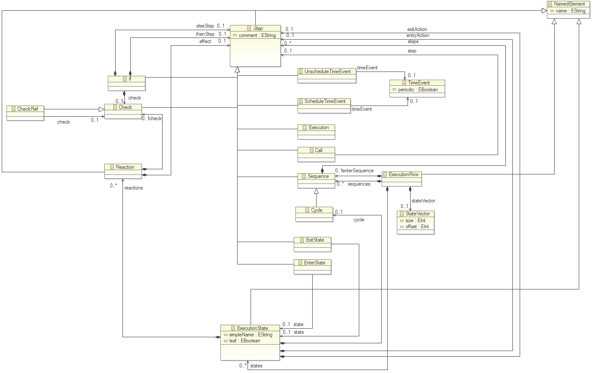

Within this documentation, we want to create a common view about the Yakindu Statechart Generator and a number of implementation variations.
The following figure shows the eCore model for the execution model (date 18:10:11):

The mechanism to generate and execute time-dependent events is the task of the specific implementation and not the task of the generated code. In default the code generator assumes that a concrete implementation is available.
The Interface should contain following methods:
| * | setTimer(event, time, periodic?) |
| Defines an event which will be triggered after the specified |
| * | resetTimer(event) |
| Resets the timer of the event so it is not triggered anymore. |
Example:
The C++ code generator generates an abstract base class ‚Timer’ which contains the virtual methods ‚setTimer(EventID, Time in ms, periodic occurence?)’ and ‚resetTimer(event)’.
A concrete implementation has to fill these methods to create an event with the given ID at the end of the assigned time and commit it to the statechart via the event interface. If a State is leaved by another event before the timer event is triggered, the timer event has to be resetted with the 'resetTimer(event) method. The concrete implementation has to ensure that the started timer is stopped.